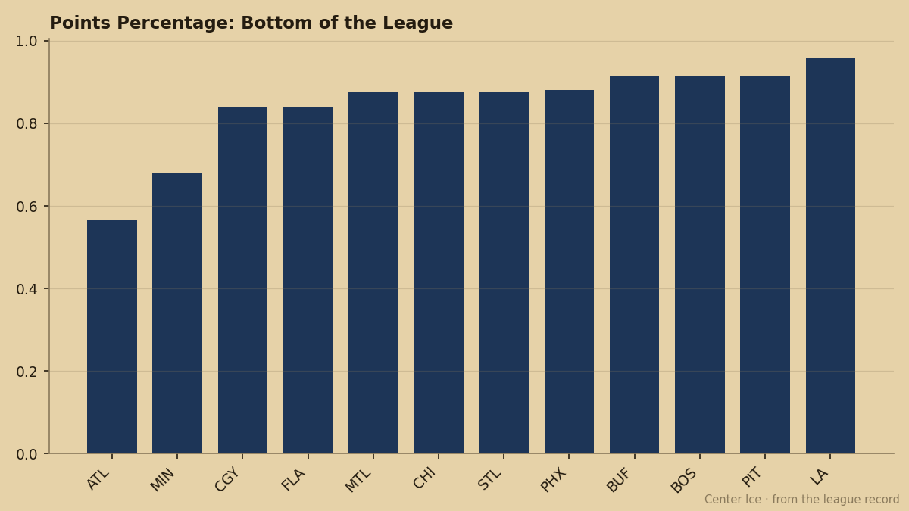

The Pick in the Basement: How Toronto Got Detroit's First Without Lifting a Finger
The Lions are 5 straight losses from the bottom of the standings, and the map on that first-rounder leads right to Toronto's war room
 Pete LarocqueScouting editor · The Prospect File
Pete LarocqueScouting editor · The Prospect FileYou don't build a tank. You inherit one.
 Toronto Maple Leafs owns
Toronto Maple Leafs owns  Detroit Red Wings's first-round pick in June. The Lions are 8-9-4 through 24 games, sitting on a 5-game losing streak, and have been outscored 99 to 89 on the season. They just lost 9-1 to Toronto on November 16 — the kind of night that makes a general manager stare at the ceiling at 2 a.m. and wonder if the rebuild starts here, in the wreckage.
Detroit Red Wings's first-round pick in June. The Lions are 8-9-4 through 24 games, sitting on a 5-game losing streak, and have been outscored 99 to 89 on the season. They just lost 9-1 to Toronto on November 16 — the kind of night that makes a general manager stare at the ceiling at 2 a.m. and wonder if the rebuild starts here, in the wreckage.
I've spent the last two editions telling you about Toronto's youth wave: 6 players under 23 with positive form on the Development Index, no other club above 2. That story doesn't change. What changes is that the front office now has another asset to feed it — and they got it without trading away a single piece of the core.
The slide, game by game
Detroit's last 10 results tell the whole story of a team that has lost its identity somewhere between the neutral zone and the blue line. They are 3-8 on the road this season, and the 5-game skid includes a 5-4 overtime loss to  Calgary Flames, a 6-5 overtime defeat at
Calgary Flames, a 6-5 overtime defeat at  Carolina Hurricanes, a 4-2 home loss to
Carolina Hurricanes, a 4-2 home loss to  New Jersey Devils, a 6-3 blowout against
New Jersey Devils, a 6-3 blowout against  Edmonton Oilers, and another OT loss to the Oilers. 5 games, 4 one-goal margins, 0 points from the games that should have been wins.
Edmonton Oilers, and another OT loss to the Oilers. 5 games, 4 one-goal margins, 0 points from the games that should have been wins.
| Date | Opponent | H/A | Score | Result |
|---|---|---|---|---|
| Nov 23 | EDM | Away | 3-4 | OTL |
| Nov 25 | EDM | Home | 3-6 | L |
| Nov 27 | NJ | Home | 2-4 | L |
| Nov 29 | CAR | Away | 5-6 | OTL |
| Dec 1 | CGY | Home | 4-5 | OTL |
3 of those 5 were one-goal games. 2 went to overtime. This is not a team getting swept out of the building — it's a team that can't close. And the standings don't care about how close it was.
The tank, by the numbers
At the bottom of the league,  Atlanta Thrashers sits alone at 13 points from 23 games.
Atlanta Thrashers sits alone at 13 points from 23 games.  Minnesota Wild is next at 17 points from 25. Detroit, with 26 points from 24 games, isn't technically a tank team yet. But the trajectory is unmistakable, and the draft capital doesn't care about trajectory. It cares about the final standings.
Minnesota Wild is next at 17 points from 25. Detroit, with 26 points from 24 games, isn't technically a tank team yet. But the trajectory is unmistakable, and the draft capital doesn't care about trajectory. It cares about the final standings.

Detroit is outscored by 10 on the season — 99 goals against, 89 for. They are not getting blown out every night; they are losing the close ones, piling up overtime and shootout defeats until suddenly you're looking at a lottery ball. The Lions need to fall, and their schedule is doing the work for them.
What Toronto does with it
Here's where the piece becomes more than a sympathy column for Detroit fans. The 2048 Junior Bureau class is absurdly deep at the top. Ola Jardemyr, a defenseman, carries a 99 potential. Petr Beier (LW) and Petri Makiaho (C) sit at the same figure. Tim Gardener, a left winger with 83 in checking and 78 in puck, is at 98. Even if Detroit doesn't fall all the way to the bottom — even if they land at 6th or 8th — Toronto gets a generational talent in June.
And they slot him into a roster that already has  Marian Gaborik95 (22, 96 overall, +6 on the Index, 34 points in 25 games),
Marian Gaborik95 (22, 96 overall, +6 on the Index, 34 points in 25 games),  Rostislav Klesla81 (22, 82 overall, +5 on the Index, 13 points as a defenseman),
Rostislav Klesla81 (22, 82 overall, +5 on the Index, 13 points as a defenseman),  Rick Nash80 (20, 81 overall, +5 on the Index, 22 points), and Petr Chlup81 (18, 82 overall, +3 on the Index, 8 points in 14 games). 6 young players rising, and now the front office has another lever to pull.
Rick Nash80 (20, 81 overall, +5 on the Index, 22 points), and Petr Chlup81 (18, 82 overall, +3 on the Index, 8 points in 14 games). 6 young players rising, and now the front office has another lever to pull.
Toronto is 18-5-0, 40 points, 10 straight wins, and the Eastern Conference lead. They don't need the pick. That's the point. They get the pick anyway, and the pick makes them worse to play against in June and beyond.
Detroit's rebuild, if it is one, belongs to Toronto now. The map on that first-rounder doesn't lead to a lottery ball. It leads to a war room where someone is already printing a jersey with a name they haven't announced yet.